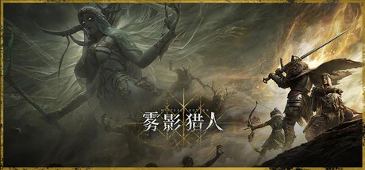

Bellring Games 开发、字节朝夕光年发行的黑暗奇幻第三人称 PvPvE 动作搜打撤 RPG，诸神陨落后猎金人猎杀怪物获取流金，1-3 人组队，类魂战斗+撤离机制。
想象一场剑与魔法的大战之后，诸神全部陨落——他们的鲜血没有消散，而是凝成了一片腐蚀性的金色迷雾「金雾」，席卷整片大陆，吞噬灵魂，把活物扭曲成疯狂的怪物。世界停滞在这场末日里，阴暗、沉郁，带着北欧神话诸神黄昏的味道。而你，是一具本该死去的躯壳——直到一个叫「露」的神秘少女，用超自然的力量把你唤醒，给了你一副不朽的肉体。
从此你成了「猎金人」。露指引着你，一次次深入被金雾笼罩的险地——布兰德要塞的幽暗地牢、神木林的林间遗迹——去猎杀那些被金雾腐蚀的怪物，从它们身上搜集「流金」，也就是诸神凝固的血。你带着装备进场，清怪、搜刮、挑战地图中央那头叫「暴食者」的 Boss，同时得提防暗处别的猎金小队——在这里，比怪物更危险的，往往是另一个和你一样想活着带宝物离开的人。你搜集流金，是为了修补那张破损的「命运之网」。
可越深入金雾，越有些事说不清：那个把你从死亡里唤醒的少女露，她为什么选中你、又图什么？你拼命搜集的流金——修补命运之网真能救回这个世界，还是不过是把末日延后一步？而「不朽」这件事本身，当你一次次死了又被唤回、每次都得赌上刚搜到的一切，这究竟是恩赐，还是一场没有尽头的苦役？这不是一个关于打怪捡装备的故事，是一个关于「一个死过的人，愿意为一线渺茫的希望，一次次走进吞噬灵魂的迷雾多少回」的故事——金雾缩圈的铃声响起时，你是选择带着战利品逃，还是再赌一把？
「哥特黑暗奇幻」，是把诸神黄昏的北欧末世和搜打撤的高压死亡循环缝进同一片迷雾大陆的美学。底子是阴暗沉郁的写实黑暗奇幻——幽暗地牢、残破要塞、被腐蚀的生物；变异在于「金色迷雾」这个由神血凝成的核心母题，既是世界观来源，也是最醒目的视觉符号。色彩以幽冥暗蓝黑撞金雾的腐蚀金为骨，整体肃穆、压抑，是那种一步一杀机的哥特死亡美学。
「黑暗奇幻 + 搜打撤」是近几年才打通的新赛道。2017 年《逃离塔科夫》定义了硬核搜打撤的高风险循环，让「死亡掉光一切」成为品类的紧张感来源。2023 年《Dark and Darker》第一个把「黑暗奇幻 + 撤离」缝在一起，是雾影猎人最直接的对标——差异在于这一作走第三人称、更偏魂味流畅。战斗与氛围上，它站在《黑暗之魂》到《艾尔登法环》这条 FromSoftware 死亡美学线上。发行方 Skystone 由《暗黑破坏神》缔造者联合创立，美术血脉由此而来。
基于体验清单 · 审美偏好 · IP故事三维度综合选出
点击链接跳转到对应平台查看 · 仅整理外部链接